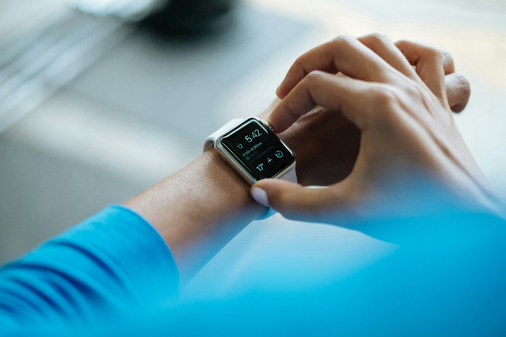
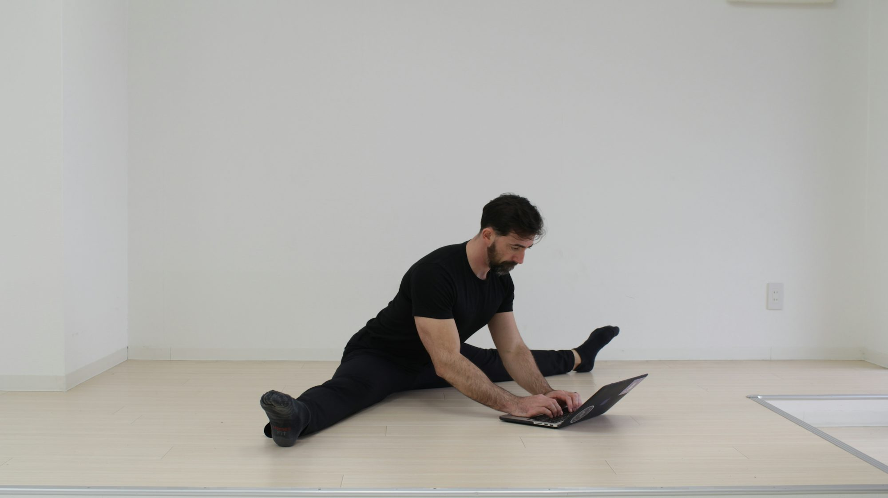

Viewpoint

Content library
Elena Rossi
Fueling Fitness: The Essential Guide to Nutrient-Rich Eating
This article explores how incorporating nutrient-rich foods into your diet can enhance fitness performance and overall health, providing practical tips for meal planning and preparation.
Sophia Miller

Flexibility and Stretching: Unlocking Your Body's Potential
This article explores the importance of flexibility and stretching, outlining the benefits, various techniques, and tips for incorporating stretching into your daily routine.
Emily Chen
Harnessing the Power of Exercise: A Journey to Wellness
Discover the transformative benefits of various exercise types and how they can enhance your physical and mental well-being.
Exploring the Benefits of Outdoor Activities for Mental Health
This article examines the positive impact of outdoor activities on mental health, exploring various activities, their benefits, and ways to incorporate them into daily life.
Elena Kwan

Exploring the Benefits of Strength Training for All Ages
This article examines the importance of strength training in promoting physical health, enhancing daily performance, and supporting overall well-being, suitable for individuals of all ages.
07/24/25
Exploring the Benefits of Outdoor Activities for Fitness and Well-Being
This article delves into the various outdoor activities that promote physical fitness and mental well-being, highlighting their benefits and offering tips for getting started.
Lucas Green
05/29/25
Exploring the Benefits of Resistance Band Workouts
This article delves into the advantages of resistance band workouts, offering effective exercises and tips for incorporating them into your fitness routine.
05/15/25